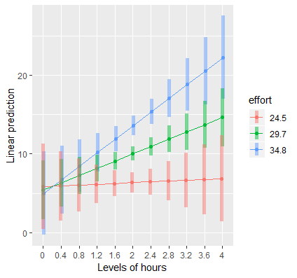
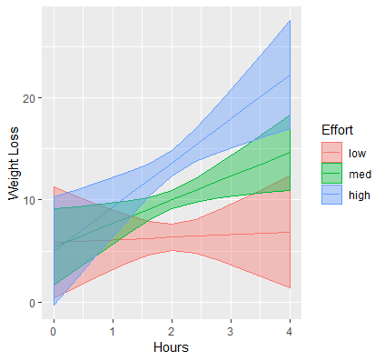
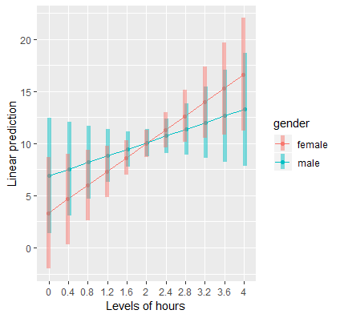
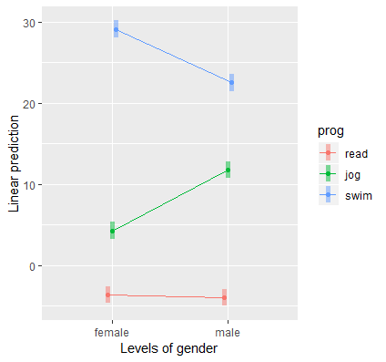
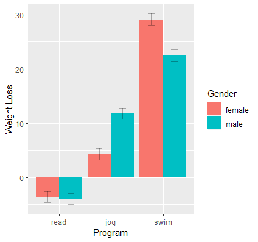
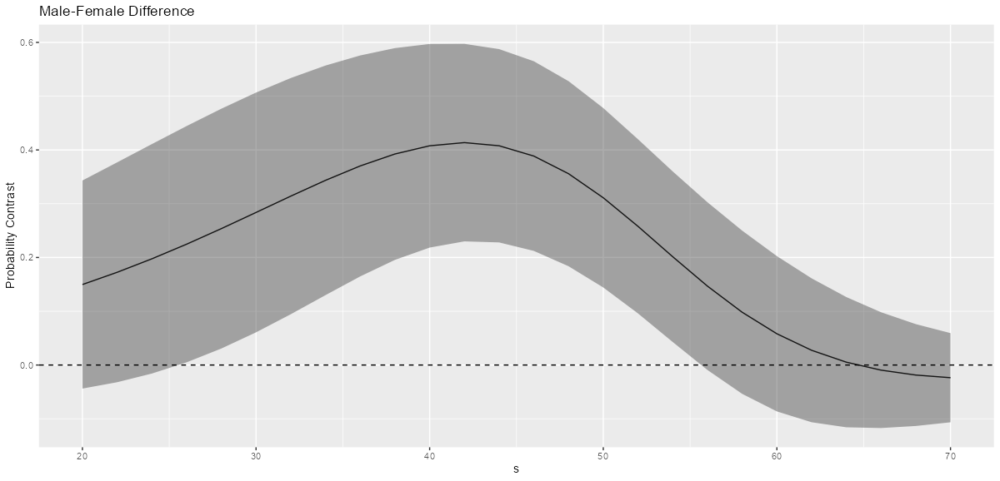
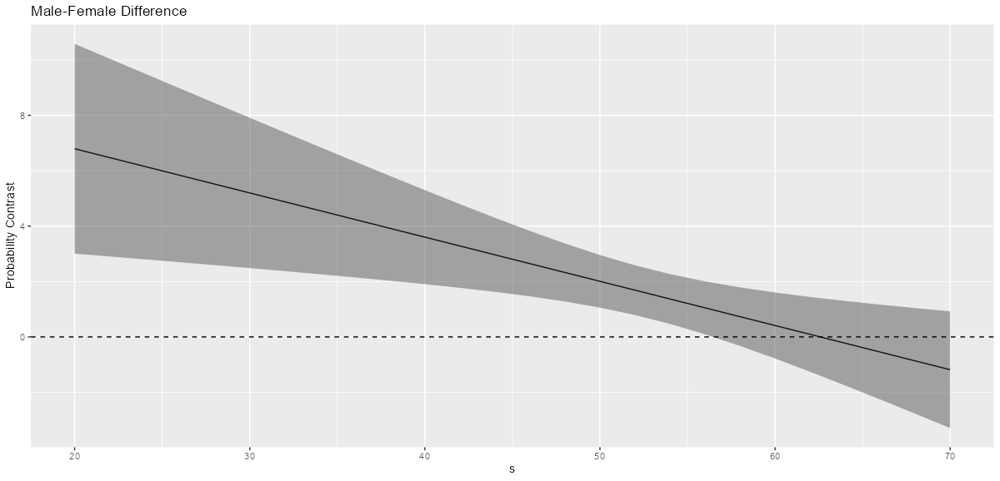
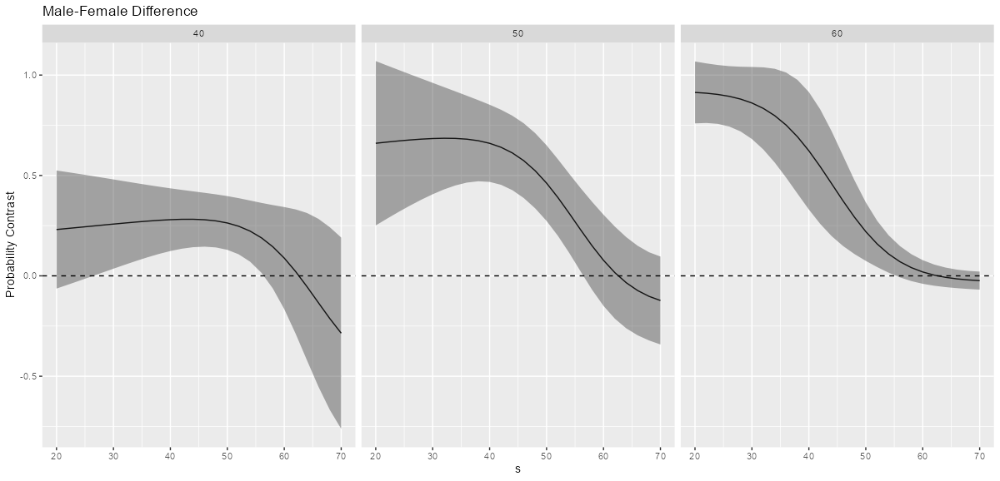
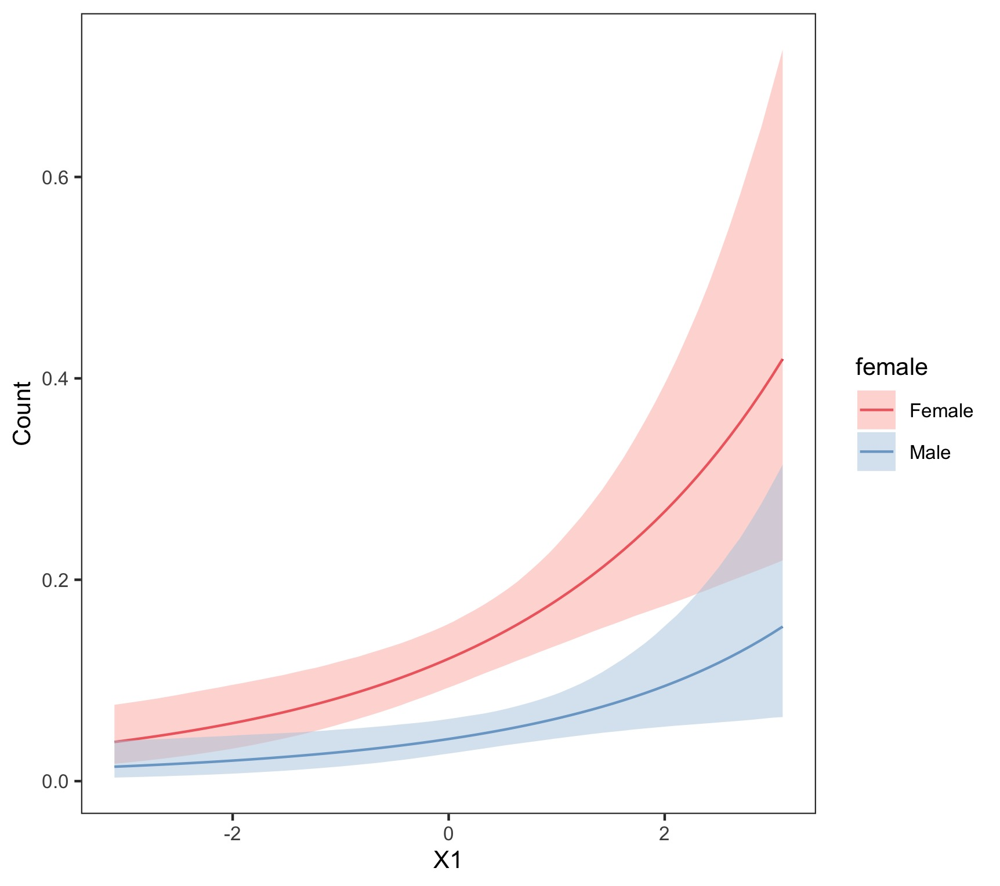

140 Regression, Interactions
TOC
- Misc
- Terms
- Processing
- Linear
- numeric:numeric
- Interpretation of model effects
- Calculate simple slopes for the IV at 3 representative values for the moderator variable
- Plot simple slopes (coefs)
- Test pairwise differences (contrasts) of simple slopes (coefs)
- Test pairwise differences (contrasts) of simple effects (predicted means)
- numeric:binary
- Interpretation of model effects
- Simple slopes of numeric (IV) by each level of the categorical (moderator)
- Simple effects at values of the moderator
- Plotting the numeric by binary interaction
- categorical:categorical
- Interpretation of model effects
- Marginal Means for all combinations of the interaction variable levels
- Simple Effects of the IV for all values of the moderator variable
- numeric:numeric
- Logistic Regression
- numeric:binary
- Simple slopes of numeric (IV) by each level of the categorical (moderator)
- Simple effects at values of the IV
- Plot simple effects
- output: probabilities
- output: log-odds (logits)
- Simple Effects at values of the moderator and adjustment variable
- Plot simple effects and facet by values of the adjustment variable
- numeric:binary
- Poisson/Neg.Binomial
Misc
- Also see Post-Hoc Analysis, emmeans >> Interactions
- Selecting values of continuous predictors to use for calculating marginal effects
- Mean/Median and quantiles are popular choices
- Check if they’re multi-modal. If so, then the mean or median may not be a useful value to use for that variable when computing marginal effects.
- Modes for the distribution would be a suitable alternative.
- May also be useful to try to find intervals of values where there is no significant marginal effect.
- Using all combinations of values in the observed data to compute individual marginal effects and then taking the average will result in the average interaction effect
- Helpful in generating inferences about the whole population of interest instead of scenarios of interest or groups of interest
- Gelman and Hill: “Interactions can be important. In practice, inputs that have large main effects also tend to have large interactions with other inputs. (However, small main effects do not preclude the possibility of large interactions.)”
- We can probe or decompose interactions by asking the following research questions:
- What is the predicted Y given a particular X and W? (predicted value)
- What is relationship of X on Y at particular values of W? (simple slopes/effects)
- Is there a difference in the relationship of X on Y for different values of W? (comparing simple slopes)
- Predictors that are uncorrelated with each other still might have interaction effects on the response variable.
- Example: plant growth requires sunlight and rain. Without rain, sunlight will not increase growth and vice versa, but rain with sunlight does cause growth. This interaction effect exists even though amounts of sunlight and rain aren’t (very) correlated with each other
- Quadratic interaction example from {marginaleffects} vignette
- Dropping main effects
- For the cont x cat interaction, as long as you don’t drop a categorical main effect, I don’t think it affects the model. It may or may not reparameterize the interaction coefficients so they’re the marginal effects instead contrasts. (see article)
- e.g. for
admit ~ dept + gender:dept, the interpretation of an interaction coefficient might be something like male-female at dept A.
- e.g. for
- Whether it’s okay to drop the categorical variable, may depend on whether the main effects are significant or not
- Dropping a continuous main effects changes the model, so best not to ever do that in cat x cont or cont x cont interactions.
- Harrell said in a SO post that you should never do it.
- He had a link to blog post he’d written but the link was dead and there wasn’t anything in his RMS book.
- For the cont x cat interaction, as long as you don’t drop a categorical main effect, I don’t think it affects the model. It may or may not reparameterize the interaction coefficients so they’re the marginal effects instead contrasts. (see article)
- False linearity assumptions of main effects can inflate apparent interaction effects because interactions may be colinear with the omitted non-linear effect
- Interactions may also be non-linear, but shouldn’t do this w/smaller sample sizes
- With smaller sample sizes, make the main effect non-linear and the interaction component linear if the non-linear relationship is present between the interaction and outcome.
Terms
Disordinal Interactions (aka crossover or antagonistic) - Interaction results whose lines do cross. (see fig in Ordinal Interactions)
- When an interaction is significant and “disordinal”, interpretation of main effects is likely to be misleading.
- To determine exactly which parts of the interaction are significant, the omnibus F test must be followed by more focused tests or comparisons.
- When an interaction is significant and “disordinal”, interpretation of main effects is likely to be misleading.
Marginal Effects (aka Simple Slope) - partial derivatives of the regression equation with respect to each variable in the model for each unit (i.e. observation) in the data; average marginal effects are simply the mean of these unit-specific partial derivatives over some sample
- i.e. the slope of the prediction function, measured at a specific value of the regressor
- In OLS regression with no interactions or higher-order term, the estimated slope coefficients are average marginal effects
- In other cases and for generalized linear models, the coefficients are NOT marginal effects at least not on the scale of the response variable
Moderator Variable (MV) - a predictor that changes the relationship of the IV on the DV, and it can be continuous or discrete. Used in an interaction to estimate its effect. (also see Causal Inference >> Moderator Analysis)
Ordinal Interactions - Interaction results whose lines do not cross
.png)
- This looks like an EDA plot but also see OLS >> Numeric:Numeric >> Plot Simple Slopes
- Similar plot but for post-hoc analysis of a regression with an interaction
- Exponential Interaction: If the lines are not parallel but one line is steeper than the other, the interaction effect will be significant (i.e. detected) only if there’s enough statistical power.
- If the lines are exactly parallel, then there is no interaction effect
- This looks like an EDA plot but also see OLS >> Numeric:Numeric >> Plot Simple Slopes
Simple Effect - when a Independent Variable interacts with a moderator variable (MV), it’s the differences in predicted values of the outcome variable at a particular levels or values of the MV
- The article used as reference for OLS section uses Simple Effects and Slopes interchangeably and also confuses regression coefficients with predicted values when referring to those terms throughout the tutorial. It’s confusing, so I’ve seperated the terms — one for coefficients (slopes) and another for predicted values/means (effects).
- Each of these predicted values is a Marginal Mean (term used in {emmeans}). So, the simple effect would be the difference (aka contrast) of marginal means.
- {marginaleffects} calls these “adjusted predictions” or “marginal means” but both seem to be the same thing.
- The interaction coefficient is the difference of simple effects (aka the “difference in differences”)
- IMO this is the value is more useful than than a contrast of simple slopes
- For the contrast of simple slopes, the pvals are unhelpful and the interpretation of the results is kind of janky (see interpretation in numeric:numeric >> Test pairwise differences (contrasts) of simple slopes section).
Simple Slope (aka Marginal Effect): when a Independent Variable interacts with a moderator variable (MV), its slope at a particular level or value of the MV
- The main effect when an interaction is specified
- e.g. Y ~ b0 + b1X1 + b2X2 + b3X1X2
- Interpret simple slope, b1, as the expected change in Y after 1 unit change in X1 when X2 = 0
- The article used as reference for OLS section uses Simple Effects and Slopes interchangeably and also mixes regression coefficients with predicted values when referring to those terms throughout the tutorial. It’s confusing, so I’ve seperated the terms — one for coefficients (slopes) and another for predicted values/means (effects).
Spotlight Analysis: Comparison of simple slopes to see analyze the effect of the variable of interest at different levels of the moderator
- When an interaction is significant, choose representative values for the moderator variable and plot the simple slopes of explanatory variable to decompose the relationship between the variables involved in the interaction.
- Made popular by Leona Aiken and Stephen West’s book Multiple Regression: Testing and Interpreting Interactions (1991).
Processing
- Center numeric variables
- Centering fixes collinearity issues when creating powers and interaction terms (CV post)
- Collinearity between the created terms and the main effects
- Interpretation of effects with be at the mean of the explanatory variable
- e.g. Since X = 0 implies , the intercept, simple slopes and simple effects are interpreted at X = mean(x).
- Discourages unreasonable extrapolations
- Centering fixes collinearity issues when creating powers and interaction terms (CV post)
Linear
- Misc
- Notes from Article
- If the interaction term is not significant but the main effect is significant then the intercepts (i.e. response means) of at least one pair of the levels DO differ.
- {emmeans::emmeans} can explore and test these types of scenarios
- factor(var) might be necessary for character variables with more than one level (to get the contrasts) but isn’t necessary for 0/1 variables (same coefficient estimates with or without).
emtrendstakes all differences (aka contrasts) from the reference group. So signs may be different from thesummarystats values
- Numeric:Numeric
- Example: Does the effect of workout duration (IV) on weight loss (Outcome) change due to the intensity of your workout (Moderator)?
contcont <- lm(loss ~ hours + effort + hours:effort, data=dat)
Estimate Std. Error t value Pr(>|t|)
(Intercept) 7.79864 11.60362 0.672 0.5017
hours -9.37568 5.66392 -1.655 0.0982 .
effort -0.08028 0.38465 -0.209 0.8347
hours:effort 0.39335 0.18750 2.098 0.0362 *- (Intercept): the intercept, or the predicted outcome when Hours = 0 and Effort = 0.
- hours (simple slope, Indepenedent Variable (IV)): for a one unit change in Hours, the predicted change in weight loss at Effort=0.
- effort (simple slope, moderator): for a one unit change in Effort the predicted change in weight loss at Hours=0.
- hours:effort: the change in the slope of Hours for every one unit increase in Effort (or vice versa).
- Spotlight Analysis
- Calculate representative values for the moderator variable
eff_high <- round(mean(dat$effort) + sd(dat$effort), 1) # 34.8
eff <- round(mean(dat$effort), 1) # 29.7
eff_low <- round(mean(dat$effort) - sd(dat$effort), 1) # 24.5mean, +1 sd, -1 sd
Calculate simple slopes for the IV at 3 representative values for the moderator variable
# via [{emmeans}]{style='color: #990000'}
mylist <- list(effort = c(eff_low, eff, eff_high))
emtrends(contcont, ~effort, var = "hours", at = mylist)
effort hours.trend SE df lower.CL upper.CL
24.5 0.261 1.352 896 -2.392 2.91
29.7 2.307 0.915 896 0.511 4.10
34.8 4.313 1.308 896 1.745 6.88
Confidence level used: 0.95
# via [{marginaleffects}]{style='color: #990000'}
loss_grid <- datagrid(effort = c(eff_high, eff, eff_low),
model = contcont)
marginaleffects(contcont, newdata = loss_grid)
rowid type term dydx std.error hours effort
1 1 response hours 4.3127872 1.30838659 2.002403 34.8
2 2 response hours 2.3067185 0.91488236 2.002403 29.7
3 3 response hours 0.2613152 1.35205286 2.002403 24.5
4 1 response effort 0.7073625 0.08795998 2.002403 34.8
5 2 response effort 0.7073625 0.08795998 2.002403 29.7
6 3 response effort 0.7073625 0.08795999 2.002403 24.5
>- {emmeans}
- “contcont” is the model (e.g. lm)
- “~effort” tells
emtrendsto stratify by the moderator variable “effort” - df is 896 because we have a sample size of 900, 3 predictors and 1 intercept (df = 900 - 3 -1 = 896)
- {marginaleffects}
- Shows how “hours” is held constant at its mean when it’s simple slope is calculated at the values specified for “effort”
- Additionally gives you the simple slope for “effort” at the mean of “hours”
- Interpretation:
- When effort = 24.5, a one unit increase in hours results in a 0.26 increase in weight loss on average
- As we increase levels of Effort, the effect of hours on weight loss seems to increase
- Simple slope of Hours is significant only for mean Effort levels and above (i.e. CIs for mean and high effort don’t include 0)
- Plot simple slopes for the IV (hours)
# via [{emmeans}]{style='color: #990000'}
mylist <- list(hours = seq(0,4, by = 0.4), effort = c(eff_low, eff, eff_high))
emmip(contcont, effort ~ hours, at = mylist, CIs = TRUE)
# via [{marginaleffects}]{style='color: #990000'}
plot_cap(contcont, condition = c("hours", "effort")) # creates it's own subset of values for effort- predicted outcome vs IV (newdata) by moderator (new data)
- For each value of effort, the slope of the hours line at the mean of hours (for that effort level) is the value of the hours marginal effect
- Interpretation:
- Suggests that hours spent exercising is only effective for weight loss if we put in more effort. (i.e. as effort increases so does the effect of hours)
- At the highest levels of Effort, we achieve higher weight loss for a given time input.
- ggplot
# via [{emmeans}]{style='color: #990000'}
contcontdat <- emmip(contcont,effort~hours,at=mylist, CIs=TRUE, plotit=FALSE)
contcontdat$feffort <- factor(contcontdat$effort)
levels(contcontdat$feffort) <- c("low","med","high")
ggplot(data=contcontdat, aes(x=hours,y=yvar, color=feffort)) +
geom_line() +
geom_ribbon(aes(ymax=UCL, ymin=LCL, fill=feffort), alpha=0.4) +
labs(x="Hours", y="Weight Loss", color="Effort", fill="Effort")
# via [{marginaleffects}]{style='color: #990000'}
moose <- predictions(contcont, newdata = datagrid(hours = seq(0,4, by = 0.4),
effort = c(eff_low, eff, eff_high),
grid.type = "counterfactual"))
ggplot(data=moose, aes(x=hours,y=predicted, color=factor(effort))) +
geom_line() +
geom_ribbon(aes(ymax=conf.high, ymin=conf.low, fill=factor(effort)), alpha=0.4) +
labs(x="Hours", y="Weight Loss", color="Effort", fill="Effort")- Test pairwise differences (contrasts) of simple slopes
emtrends(contcont, pairwise ~effort, var="hours",at=mylist)
$contrasts
contrast estimate SE df t.ratio p.value
24.5 - 29.7 -2.05 0.975 896 -2.098 0.0362
24.5 - 34.8 -4.05 1.931 896 -2.098 0.0362
29.7 - 34.8 -2.01 0.956 896 -2.098 0.0362
Results are averaged over the levels of: hours- {marginaleffects} doesn’t do this from what I can tell and IMO looking at contrasts of simple effects (next section) is a better method
- {emmeans}
- “pairwise ~effort” tells the function that we want pairwise differences of the simple slopes of var=“hours” for each level of effort specified “at=mylist”
- hours not specified in mylist just the 3 values for effort
- The results are with the arg, adjust=“none”, which removes the Tukey multiple test adjustment. Removed it from the code, because it’s bad practice.
- “pairwise ~effort” tells the function that we want pairwise differences of the simple slopes of var=“hours” for each level of effort specified “at=mylist”
- Interpretation
- A one unit change in hours when effort is high (34.8) results is 4 lbs more weight loss than a one unit change in hours when effort is low (24.5)
- Based on the NHST, all the simple slopes are significantly different from each other
- For numeric:numeric, p-values will all be the same and identical the interaction p-value of the model (has to do with the slope formula)
- Testing the simple effects contrasts (see below) may be the better option
- Test pairwise differences (contrasts) of simple effects
# via [{emmeans}]{style='color: #990000'}
mylist <- list(hours = 4, effort = c(eff_low, eff_high))
emmeans(contcont, pairwise ~ hours*effort, at=mylist)
$emmeans
hours effort emmean SE df lower.CL upper.CL
4 24.5 6.88 2.79 896 1.4 12.4
4 34.8 22.26 2.68 896 17.0 27.5
Confidence level used: 0.95
$contrasts
contrast estimate SE df t.ratio p.value
4,24.5 - 4,34.8 -15.4 3.97 896 -3.871 0.0001
# via [{marginaleffects}]{style='color: #990000'}
comparisons(contcont,
variables = list(effort = c(eff_low, eff_high)),
newdata = datagrid(hours = 4)) %>%
tidy()
rowid type term contrast_effort comparison std.error statistic p.value conf.low conf.high effort hours
1 1 response interaction 34.8 - 24.5 15.37904 3.97295 3.870938 0.0001084175 7.592203 23.16588 29.65922 4
# alternate (difference in results could be due to rounding of eff_low, eff_high)
comparisons(contcont,
variables = list(effort = "2sd"),
newdata = datagrid(hours = 4,
grid.type = "counterfactual")) %>%
tidy()
type term contrast_effort estimate std.error statistic p.value conf.low conf.high
1 response interaction (x + sd) - (x - sd) 15.35743 3.967367 3.870938 0.0001084175 7.581535 23.13333- One reason to look at the tests for the predicted means contrast instead of the slope contrasts is the constant p-value across slope contrasts (see above)
- If hours isn’t specified emmeans holds hours at the sample mean.
- Using {marginaleffects} and holding hours at sample mean (and probably every other variable in the model),
comparisons(contcont, variables = list(effort = "2sd")) %>% tidy()
- Using {marginaleffects} and holding hours at sample mean (and probably every other variable in the model),
- Specification
- hours has a fixed value and the moderator is allowed to vary between high and low effort
- emmeans
- “pairwise ~ hours*effort to tell the function that we want pairwise contrasts of each distinct combination of Hours and Effort specified at=mylist
- marginaleffects
- effort = “2d” says compare (effort + 1 sd) to (effort - 1 sd)
- grid.type = “counterfactual” because there is no observation in the data with hours = 4
- Interpretation
- Based on the NHST, the difference between the predicted means of high and low effort are significantly different from each other when hours = 4
- After 4 hours of exercise, high effort (34.8) will result in about 15 pounds more weight loss than low effort (24.5) on average.
- Numeric:Binary
- The change in the slope of the numeric (IV) after a change from the reference level to the other level in the binary (Moderator)
- Note that this value is an additional change to the effect of the numeric (i.e when binary = 1, the effect = numeric effect + interaction effect)
- Significant means that the factor variable does increase/decrease the effect of the numeric variable
- Example: Does the effect of workout duration (IV) on weight loss (Outcome) change because you are a male or female (Moderator)?
- The change in the slope of the numeric (IV) after a change from the reference level to the other level in the binary (Moderator)
dat <- dat %>%
mutate(gender = factor(gender, labels = c("male", "female")) # male = 1, female = 2,
gender = relevel(gender, ref = "female")
)
contcat <- lm(loss ~ hours * gender, data=dat)
Estimate Std. Error t value Pr(>|t|)
(Intercept) 3.335 2.731 1.221 0.222
hours 3.315 1.332 2.489 0.013 *
gendermale 3.571 3.915 0.912 0.362
hours:gendermale -1.724 1.898 -0.908 0.364- Intercept (b0): predicted weight loss when Hours = 0 in the reference group of Gender, which is females.
- hours (b1, Independent Variable): the simple slope of Hours for the reference group (e.g. females).
- hours simple slope for males is b1 + b3 or
emtrends(contcat, ~ gender, var="hours")will give both simple slopes
- hours simple slope for males is b1 + b3 or
- gendermale (b2, Moderator) (reference group: female): the difference in the effect of being male compared to female at hours = 0.
- hours:gendermale (b3): the difference in the simple slopes of Hours for males to Hours for females.
emtrendscan also give thesummarystats for the interaction (sign different in this case, since difference is from the reference group, female)
hours_slope <- emtrends(contcat, pairwise ~ gender, var="hours")
hours_slope$contrasts
contrast estimate SE df t.ratio p.value
female - male 1.72 1.9 896 0.908 0.3639- Simple slopes of numeric (IV) by each level of the categorical (moderator)
# via [{emmeans}]{style='color: #990000'}
emtrends(contcat, ~ gender, var="hours")
gender hours.trend SE df lower.CL upper.CL
female 3.32 1.33 896 0.702 5.93
male 1.59 1.35 896 -1.063 4.25
# via [{marginaleffects}]{style='color: #990000'}
marginaleffects(contcat) %>%
tidy(by = "gender")
type term contrast gender estimate std.error statistic p.value conf.low conf.high
1 response hours dY/dX male 1.59113665 1.3523002 1.1766150 0.23934921 -1.0593230 4.241596
2 response hours dY/dX female 3.31506746 1.3316491 2.4894453 0.01279426 0.7050833 5.925052
3 response gender male - female male 0.09616813 0.9382760 0.1024945 0.91836418 -1.7428191 1.935155
4 response gender male - female female 0.14194405 0.9382968 0.1512784 0.87975610 -1.6970840 1.980972- {emmeans}
- ~gender says obtain separate estimates for females and males
- var=“hours” says obtain simple slopes (or trends) for hours
- {marginaleffects}
- Can also use
summary(by = "gender")
- Can also use
- Interpretation
- hours by female is the same as the model coefficient above.
- See model interpretation above
- hours by female is the same as the model coefficient above.
- Simple effects at values of the moderator
# via [{emmeans}]{style='color: #990000'}
mylist <- list(hours=c(0,2,4),gender=c("male","female"))
emcontcat <- emmeans(contcat, ~ hours*gender, at=mylist)
contrast(emcontcat, "pairwise",by="hours")
hours = 0:
contrast estimate SE df t.ratio p.value
male - female 3.571 3.915 896 0.912 0.3619
hours = 2:
contrast estimate SE df t.ratio p.value
male - female 0.123 0.938 896 0.131 0.8955
hours = 4:
contrast estimate SE df t.ratio p.value
male - female -3.325 3.905 896 -0.851 0.3948
# via [{marginaleffects}]{style='color: #990000'}
comparisons(contcat,
variables = "gender",
newdata = datagrid(hours = c(0, 2, 4)))
rowid type term contrast_gender comparison std.error statistic p.value conf.low conf.high gender hours
1 1 response interaction male - female 3.5710607 3.914762 0.9122038 0.3616614 -4.101731 11.243853 male 0
2 2 response interaction male - female 0.1231991 0.937961 0.1313478 0.8955002 -1.715171 1.961569 male 2
3 3 response interaction male - female -3.3246625 3.905153 -0.8513527 0.3945735 -10.978622 4.329297 male 4- The moderator is now “hours”
- Note that output for hours = 0, the effect 3.571 matches the b2 coefficient
- Interpretation
- as Hours increases, the male versus female difference becomes more negative (females are losing more weight than males)
- Plotting the numeric by binary interaction
# via [{emmeans}]{style='color: #990000'}
mylist <- list(hours=seq(0,4,by=0.4),gender=c("female","male"))
emmip(contcat, gender ~hours, at=mylist,CIs=TRUE)- For ggplot, see Numeric:Numeric >> Plot Simple Slopes for IV section (should be similar code)
- Interpretation
- Although it looks like there’s a cross-over interaction, the large overlap in confidence intervals suggests that the slope of Hours is not different between males and females
- Confirmed by looking at the standard error of the interaction coefficient (1.898) is large relative to the absolute value of the coefficient itself (1.724)
- Although it looks like there’s a cross-over interaction, the large overlap in confidence intervals suggests that the slope of Hours is not different between males and females
- Categorical:Categorical
- From {marginaleffects} Contrasts vignette, “Since derivatives are only properly defined for continuous variables, we cannot use them to interpret the effects of changes in categorical variables. For this, we turn to contrasts between adjusted predictions (aka Simple Effects).”
- i.e. contrasts of simple slopes aren’t possible
- 2x3 cat:cat interaction
- Example: Do males and females (IV) lose weight (Outcome) differently depending on the type of exercise (Moderator) they engage in?
- From {marginaleffects} Contrasts vignette, “Since derivatives are only properly defined for continuous variables, we cannot use them to interpret the effects of changes in categorical variables. For this, we turn to contrasts between adjusted predictions (aka Simple Effects).”
dat <- dat %>%
mutate(gender = factor(gender, labels = c("male", "female")),
gender = relevel(gender, ref = "female"),
prog = factor(prog, labels = c("jog","swim","read")),
prog = relevel(prog, ref="read")
)
catcat <- lm(loss ~ gender * prog, data = dat)
Estimate Std. Error t value Pr(>|t|)
(Intercept) -3.6201 0.5322 -6.802 1.89e-11 ***
gendermale -0.3355 0.7527 -0.446 0.656
progjog 7.9088 0.7527 10.507 < 2e-16 ***
progswim 32.7378 0.7527 43.494 < 2e-16 ***
gendermale:progjog 7.8188 1.0645 7.345 4.63e-13 ***
gendermale:progswim -6.2599 1.0645 -5.881 5.77e-09 ***- Description
- Intercept (b0): the intercept, or the predicted weight loss when gendermale = 0, progjog = 0, and progswim = 0
- i.e. the intercept for females in the reading program
- gendermale (b1): the simple effect of males when progjog = 0 and progswim = 0
- i.e. the male – female weight loss in the reading group
- progjog (b2): the simple effect of jogging when gendermale = 0
- i.e. the difference in weight loss between jogging versus reading for females
- progswim (b3): the simple effect of swimming when gendermale = 0
- i.e. the difference in weight loss between swimming versus reading for females
- gendermale:progjog (b4): the male effect (male – female) in the jogging condition versus the male effect in the reading condition.
- Also, the jogging effect (jogging – reading) for males versus the jogging effect for females.
- gendermale:progswim (b5): the male effect (male – female) in the swimming condition versus the male effect in the reading condition.
- Also, the swimming effect (swimming- reading) for males versus the swimming effect for females.
- Gender is the independent variable
- Prog is the moderator
- reference groups
- prog == read
- gender == female
- b1 + b4: is the simple slope of gender == males in the prog == jogging group.
- b1 + b5: is the simple slope of gender == males in the prog == swimming group.
- Intercept (b0): the intercept, or the predicted weight loss when gendermale = 0, progjog = 0, and progswim = 0
- Marginal Means for all combinations of the interaction variable levels
# via [{emmeans}]{style='color: #990000'}
emcatcat <- emmeans(catcat, ~ gender*prog)
gender prog emmean SE df lower.CL upper.CL
female read -3.62 0.532 894 -4.66 -2.58
male read -3.96 0.532 894 -5.00 -2.91
female jog 4.29 0.532 894 3.24 5.33
male jog 11.77 0.532 894 10.73 12.82
female swim 29.12 0.532 894 28.07 30.16
male swim 22.52 0.532 894 21.48 23.57
# via [{marginaleffects}]{style='color: #990000'}
predictions(catcat, variables = c("gender", "prog"))
rowid type predicted std.error conf.low conf.high gender prog
1 1 response 11.772028 0.5322428 10.727437 12.816619 male jog
2 2 response 22.522383 0.5322428 21.477792 23.566974 male swim
3 3 response -3.955606 0.5322428 -5.000197 -2.911016 male read
4 4 response 4.288681 0.5322428 3.244091 5.333272 female jog
5 5 response 29.117691 0.5322428 28.073100 30.162282 female swim
6 6 response -3.620149 0.5322428 -4.664740 -2.575559 female read- Marginal means generated using the regression coefficients
.png)
- Kinda weird. Since these are predicted means (i.e. outcome values), I wouldn’t have thought they could be generated by the model coefficients. ¯\_(ツ)_/¯
- Interpretation
- females in the reading program have an estimated weight gain of 3.62 pounds
- males in the swimming program have an average weight loss of 22.52 pounds
- Simple Effects of the IV for all values of the moderator variable
# via [{emmeans}]{style='color: #990000'}
contrast(emcatcat, "revpairwise", by="prog") # see above code chunk for emcatcat
prog = read:
contrast estimate SE df t.ratio p.value
male - female -0.335 0.753 894 -0.446 0.6559
prog = jog:
contrast estimate SE df t.ratio p.value
male - female 7.483 0.753 894 9.942 <.0001
prog = swim:
contrast estimate SE df t.ratio p.value
male - female -6.595 0.753 894 -8.762 <.0001
# via [{marginaleffects}]{style='color: #990000'}
comparisons(catcat,
variables = "gender",
newdata = datagrid(prog = c("read", "jog", "swim")))
rowid type term contrast_gender comparison std.error statistic p.value conf.low conf.high gender prog
1 1 response interaction male - female -0.3354569 0.7527049 -0.4456686 6.558367e-01 -1.810731 1.139818 male read
2 2 response interaction male - female 7.4833463 0.7527049 9.9419388 2.734522e-23 6.008072 8.958621 male jog
3 3 response interaction male - female -6.5953078 0.7527049 -8.7621425 1.915739e-18 -8.070582 -5.120033 male swim- {emmeans}
- “revpairwise” rather than “pairwise” because by default the reference group (female) would come first
- The results are with the arg, adjust=“none”, which removes the Tukey multiple test adjustment. Removed it from the code, because it’s bad practice.
- Interpretation
- male effect for jogging and swimming are significant at the 0.05 level (with no adjustment of p-values), but not for the reading condition.
- males lose more weight in the jogging condition (positive) but females lose more weight in the swimming condition (negative)
- Plotting the categorical by categorical interaction
- {emmeans}
emmip(catcat, prog ~ gender,CIs=TRUE) - {ggplot2}
- {emmeans}
catcatdat <- emmip(catcat, gender ~ prog, CIs=TRUE, plotit=FALSE)
gender prog yvar SE df LCL UCL tvar xvar
1 female read -3.620149 0.5322428 894 -4.664740 -2.575559 female read
2 male read -3.955606 0.5322428 894 -5.000197 -2.911016 male read
3 female jog 4.288681 0.5322428 894 3.244091 5.333272 female jog
4 male jog 11.772028 0.5322428 894 10.727437 12.816619 male jog
5 female swim 29.117691 0.5322428 894 28.073100 30.162282 female swim
6 male swim 22.522383 0.5322428 894 21.477792 23.566974 male swim
# via [{marginaleffects}]{style='color: #990000'}
predictions(catcat, variables = c("gender", "prog"))
ggplot(data=catcatdat, aes(x=prog,y=yvar, fill=gender)) +
geom_bar(stat="identity",position="dodge") +
geom_errorbar(position=position_dodge(.9),width=.25, aes(ymax=UCL, ymin=LCL),alpha=0.3)
labs(x="Program", y="Weight Loss", fill="Gender")- I think I like the emmeans plot better
- Values come from the Marginal Means for all combinations of the interaction variable levels section above
Logistic Regression
- * categorical:categorical and numeric:numeric should be should be similar to analysis for binary:numeric and the code/analysis in the OLS section *
- For more details on these other interaction types see the article linked below
- Misc
- Notes from
- How Can I Understand A Categorical By Continuous Interaction In Logistic Regression
- Deciphering Interactions In Logistic Regression
- See this article for numeric:numeric, cat:cat
- Also see
- Regression, Logistic >> Marginal Effects
- Post-Hoc Analysis, emmeans >> Logistic Regression
- Reminder: OR significance is being different from 1 and log odds ratios (logits) significance is being different from 0
- Although the interaction is quantified appropriately by the interaction coefficient when interpreting effects on the scale of log-odds or log-counts, the interaction effect will not reduce to the coefficient of the the interaction coefficient when describing effects on the natural response scale (i.e. probabilities, counts) because of the inverse-link transformation.
- In order to get e.g. probabilities, the inverse-link function must be used, and this complicates the derivatives of the marginal effect calculation. The chain rule must be appied. This means the interaction effect is no longer equivalent to the interaction coefficient.
- Therefore, effects or contrasts are differences in marginal effects rather than coefficients
- Interaction effects represent change in a marginal effect of one predictor for a change in another predictoreraction effects represent change in a marg
- Standard errors of point estimate values of interaction effects (as well as their corresponding statistical significance) may also vary as a function of the predictors.
- Need to decide whether the interaction is to be conceptualized in terms of log odds (logits) or odds ratios or probability
- An interaction that is significant in log odds may not be significant in terms of probability or vice versa
- Even if they do agree, the p-values do not have the be the same. (see below, binary:numeric >> Simple Effects >> second example >> probabilities)
- An interaction that is significant in log odds may not be significant in terms of probability or vice versa
- Notes from
- binary:numeric
- Example:
- Description
- Example:
dat_clean <- dat %>%
mutate(f = factor(f, labels = c("female", "male")))
concat <- glm(y ~ f*s, family = binomial, data = dat_clean)
summary(concat)
Estimate Std. Error z value Pr(>|z|)
(Intercept) -9.25380 1.94189 -4.765 1.89e-06 ***
fmale 5.78681 2.30252 2.513 0.0120 *
s 0.17734 0.03644 4.867 1.13e-06 ***
fmale:s -0.08955 0.04392 -2.039 0.0414 *y: binary outcome
s (IV): continuous variable
f (moderator): gender variable with female as the reference
cv1: continuous adjustment variable
Simple slopes of numeric (IV) by each level of the categorical (moderator)
# via [{marginaleffects}]{style='color: #990000'}
marginaleffects(concat, variables = "s") %>%
tidy(by = "f")
type term f estimate std.error statistic p.value conf.low conf.high
1 response s male 0.01473352 0.003237072 4.551498 5.32654e-06 0.00838898 0.02107807
2 response s female 0.02569069 0.001750066 14.679842 0.00000e+00 0.02226062 0.02912075- Interpetation
- Increasing s by 1 unit given that the person is male will result in around a 1% increase on average in the probability of the event, y.
- Simple effects at values of the IV
# via [{marginaleffects}]{style='color: #990000'}
comp <- comparisons(concat2,
variables = "f",
newdata = datagrid(s = seq(20, 70, by = 2)))
head(comp)
rowid type term contrast_f comparison std.error statistic p.value conf.low conf.high f s
1 1 response interaction male - female 0.1496878 0.09871431 1.516374 0.12942480 -0.043788674 0.3431643 male 20
2 2 response interaction male - female 0.1724472 0.10430544 1.653291 0.09827172 -0.031987695 0.3768821 male 22
3 3 response interaction male - female 0.1975119 0.10886095 1.814351 0.06962377 -0.015851616 0.4108755 male 24
4 4 response interaction male - female 0.2246979 0.11209440 2.004542 0.04501204 0.004996938 0.4443989 male 26
5 5 response interaction male - female 0.2536377 0.11376972 2.229395 0.02578761 0.030653136 0.4766222 male 28
6 6 response interaction male - female 0.2837288 0.11375073 2.494303 0.01262048 0.060781436 0.5066761 male 30- Shows the predicted value contrasts for the moderator at different values of the independent variable.
- “concat2” model defined in “Simple Effects at values of the moderator and adjustment variable” (see below)
- For
comparisons, the default is type = “response” so the output is probabilities. (type = “link” for log-ORs aka logits) - Interpretation
- For s = 26, 28, and 30, there is substantial evidence that there are differences in male and female probabilites of the event, y.
- Example: (article)
- Description
- lowbwt: binary outcome, low birthweight = 1
- age (IV): continuous, age of the mother
- ftv (moderator): binary, whether or not the mother made frequent physician visits during the first trimester of pregnancy
- Simple Effects: Odds Ratios
.png)
- ORftv is the odds-ratio contrast of (ftv = 1) - (ftv = 0) at the specified age of the mother
- Interpretation
- a mother at the age of 30 who visits the physician frequently has 0.174 times the odds of having a low birth weight baby as compared to those of the same age who don’t visit the doctor frequently
- For women whose ages are between 17 and 24, the 95% confidence intervals of the odds ratios include the null value of 1, so we do not have strong evidence of an association between frequent doctor visits and low birth weight for that age range.
- For mothers aged 25 years and older, the odds of having a low birth weight baby significantly decrease if the mother frequently visits her physician.
- Simple Effects: Probabilities
.png)
- “Difference in probability” is the probability contrast of (ftv = 1) - (ftv = 0) at the specified age of the mother
- Note that the results agree with the OR results, but the pvals are different
- So it’s probably possible that in terms of “significance,” you could get different conclusions based on the metric used.
- Interpretation
- For young mothers (less than 24 years old), we do not have strong evidence of an association between low birth weight and frequent physician visits.
- For mothers aged 25 years and older, we reject the null hypothesis of no difference in probability between those with frequent physician visits and those without.
- Overall, the difference between the probability of low birth weight comparing those with frequent visits to those without increases as the mother’s age increases.
- Description
- Plot the simple effects
ggplot(comp, aes(x = s, y = comparison)) +
geom_line() +
geom_ribbon(aes(ymax=conf.high, ymin=conf.low), alpha=0.4) +
geom_hline(yintercept=0, linetype="dashed") +
labs(title = "Male-Female Difference", y="Probability Contrast")- {marginaleffects}
- You change the
comparisons(see above) type arg to “type = link” to get log-ORs (aka logits) instead of probabilities and then plot
- You change the
- Interpretation
- The difference in probabilities for male and females is statistically significant between values of “s” approximately between 28 to 55.
- Simple Effects at values of the moderator and adjustment variable
concat2 <- glm(y ~ f*s + cv1, family = binomial, data = dat_clean)
comp2 <- comparisons(concat2,
variables = "f",
newdata = datagrid(s = seq(20, 70, by = 2),
cv1 = c(40, 50, 60)))
head(comp2)
rowid type term contrast_f comparison std.error statistic p.value conf.low conf.high f s cv1
1 1 response interaction male - female 0.2307214 0.15001700 1.537968 1.240564e-01 -0.06330656 0.5247493 male 20 40
2 2 response interaction male - female 0.6603841 0.20879886 3.162777 1.562722e-03 0.25114590 1.0696224 male 20 50
3 3 response interaction male - female 0.9135206 0.07865839 11.613773 3.507873e-31 0.75935304 1.0676882 male 20 60
4 4 response interaction male - female 0.2361502 0.14294726 1.652009 9.853270e-02 -0.04402131 0.5163217 male 22 40
5 5 response interaction male - female 0.6663811 0.19447902 3.426494 6.114278e-04 0.28520927 1.0475530 male 22 50
6 6 response interaction male - female 0.9097497 0.07571970 12.014703 2.974362e-33 0.76134178 1.0581575 male 22 60- Plot simple effects and facet by values of the adjustment variable
ggplot(comp2, aes(x = s, y = comparison, group = factor(cv1))) +
geom_line() +
geom_ribbon(aes(ymax=conf.high, ymin=conf.low), alpha=0.4) +
geom_hline(yintercept=0, linetype="dashed") +
facet_wrap(~ cv1) +
labs(title = "Male-Female Difference", y="Probability Contrast")- Interpretation
- It seems clear from looking at the three graphs that the male-female difference in probability increases as cv1 increases except for high values of s.
Poisson/Neg.Binomial
- Misc
- Notes from Paper Interpreting interaction effects in generalized linear models of nonlinear probabilities and counts
- Although the interaction is quantified appropriately by the interaction coefficient when interpreting effects on the scale of log-odds or log-counts, the interaction effect will not reduce to the coefficient of the the interaction coefficient when describing effects on the natural response scale (i.e. probabilities, counts) because of the inverse-link transformation.
- In order to get e.g. probabilities, the inverse-link function must be used, and this complicates the derivatives of the marginal effect calculation. The chain rule must be appied. This means the interaction effect is no longer equivalent to the interaction coefficient.
- Therefore, effects or contrasts are differences in marginal effects rather than coefficients
- Interaction effects represent change in a marginal effect of one predictor for a change in another predictoreraction effects represent change in a marg
- Standard errors of point estimate values of interaction effects (as well as their corresponding statistical significance) may also vary as a function of the predictors.
- Types
- Both Continuous — the rate-of-change in the marginal effect of one predictor given a change in another predictor
- Also, the amount the effect of x1 on E[Y|x] changes for every one-unit increase in x2 (and vice versa), holding all else constant.
- Continuous : Discrete — difference in the marginal effect of the continuous predictor between two selected values of the discrete predictor
- Example: Poisson outcome (population)
.png)
- x1 is continuous, x2 is continuous, x3 is binary (e.g. sex where female = 1).
- The interaction effect, γ213, of x1x3 is the difference between the marginal effect of x1 for females versus males
- Note that x2 is included in the effect calculation for an interaction it isn’t part of
- Specific values for x1 and x2 must be chosen to the calculate the value of the effect
.png)
- For x2, the 25th, 50th, 75th quartiles are used and x1 would be held at one value of substantive interest (e.g. mean)
- Standard errors via delta method for all 3 values can be computed along with p-values
- Visual
- x2 is held at its mean, and various values of x1 are used
- Interpretation: the expected population (count of Y) is larger among females than males across all values of x1 with x2 held at its mean.
- Example: Poisson outcome (population)
- Discrete : Discrete — the difference between the model evaluated at two categories of one variable (a, b) minus the difference in this model evaluated at two categories of another variable (c, d) (aka discrete double difference)
- Both Continuous — the rate-of-change in the marginal effect of one predictor given a change in another predictor